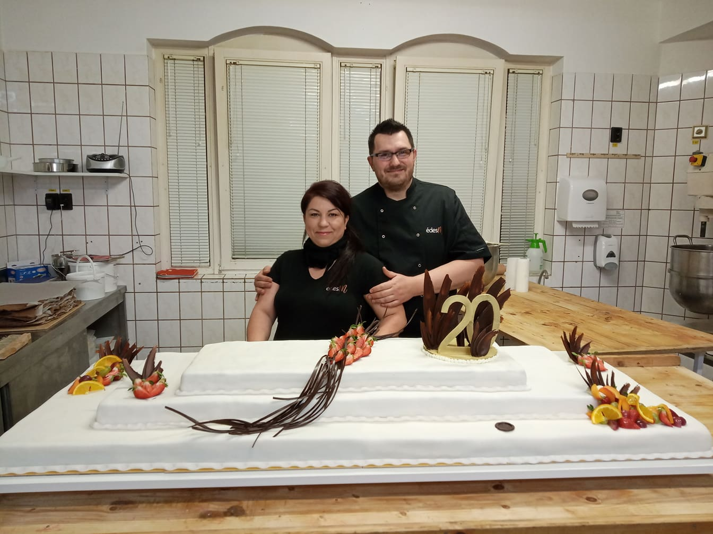

Az épület egyszer megépült, már akkor is cukrászdaként szolgált. Itt tanultam, majd sok-sok évre rá úgy gondoltam hogy belevágok saját vállalkozásomba amit természetesen szintész cukrászként álmodtam meg. Sok erőfeszítés és még több kitartás mellett létre jött az . Üdvözöllek az oldalamon.
